Республика Башкортостан · Рәсәй
Земля семи родов
и горного мёда
Южный Урал, степь и тайга, кочевые традиции и миллионный город — Башкортостан соединяет несоединимое. Исследуйте республику интерактивно.
С чего начать?
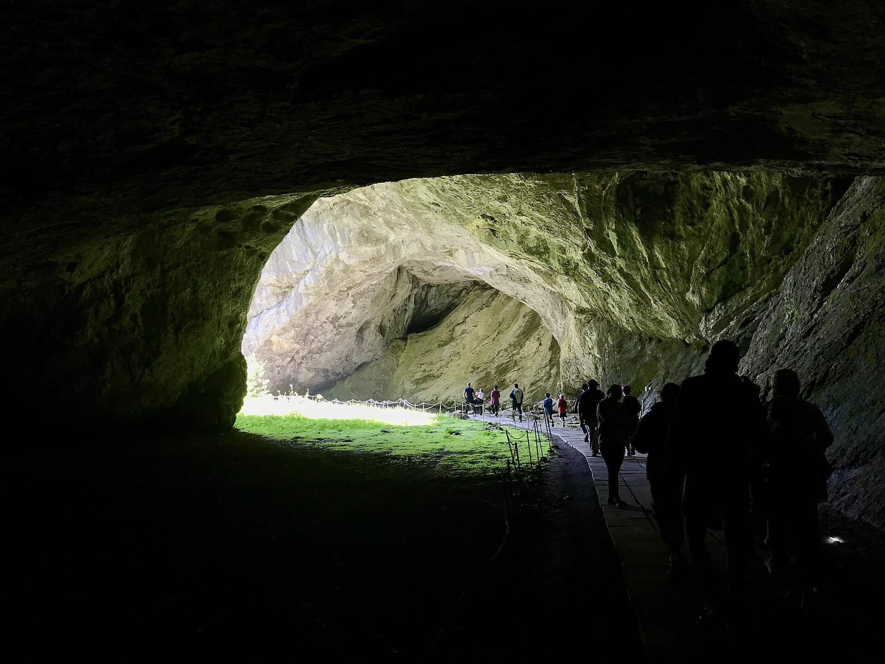
⏳ 16 000 лет истории
От палеолитической живописи в пещере Шульган-Таш до первой национальной автономии России.
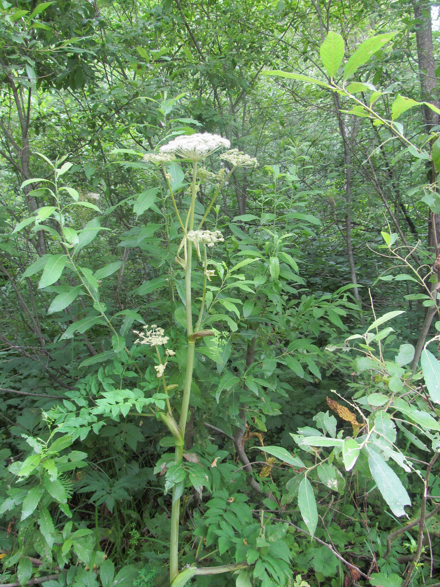
🎶 Культура и курай
Язык, семилепестковый цветок-символ, национальный костюм, юрта-тирмэ и праздник Сабантуй.
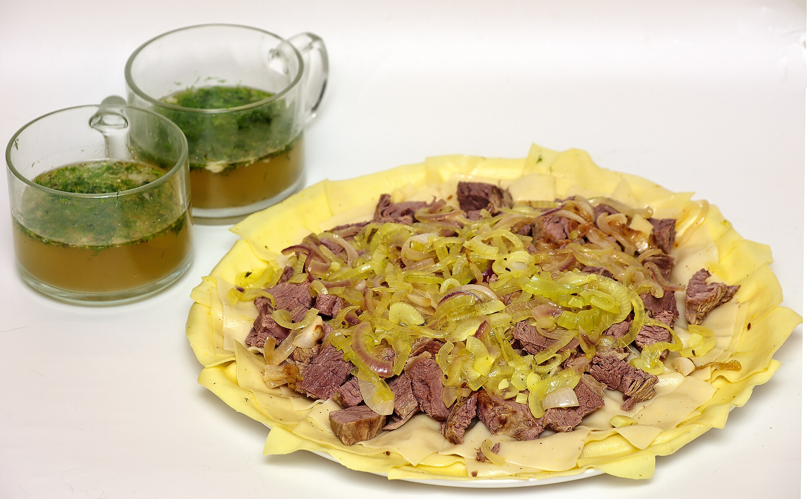
🍯 Кухня кочевников
Бишбармаҡ, кымыҙ, бортевой мёд и сек-сек к чаю — попробуйте глазами.
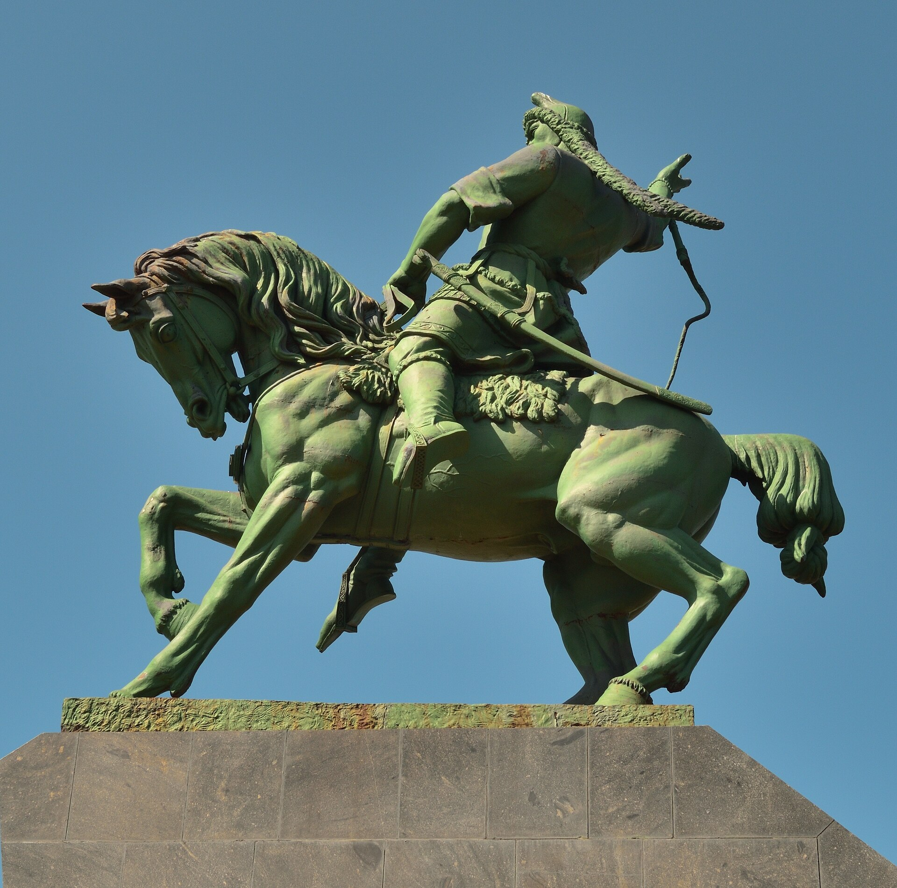
🏆 Известные люди
Салават Юлаев, Мустай Карим, Рудольф Нуреев и другие имена, прославившие республику.
Знаете ли вы?
История: от ледникового периода до автономии
Нажмите на эпоху на ленте времени, чтобы узнать подробности
Природа Башкортостана
Интерактивная карта: нажмите на точку, чтобы узнать о месте
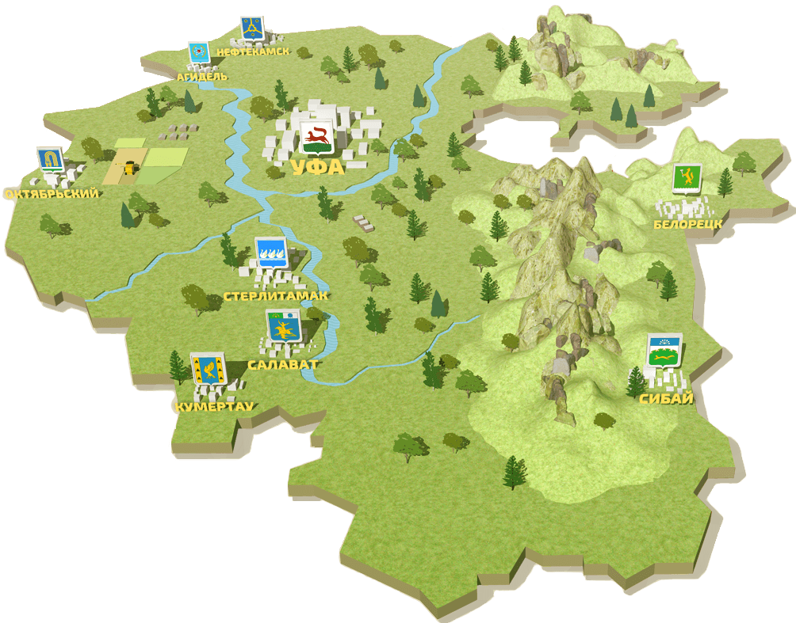
Народ и культура
Башкиры — тюркский народ Южного Урала, коренное население Башкортостана
Башкирский язык
Башкирский язык (башҡорт теле) относится к тюркской языковой семье, к её кипчакской группе. Он — государственный язык Республики Башкортостан наряду с русским. Пишется кириллицей с особыми буквами: ә, ө, ү, ғ, ҡ, ң, ҙ, ҫ, һ.
Попробуйте выучить основные фразы — они записаны по-башкирски и по-русски.
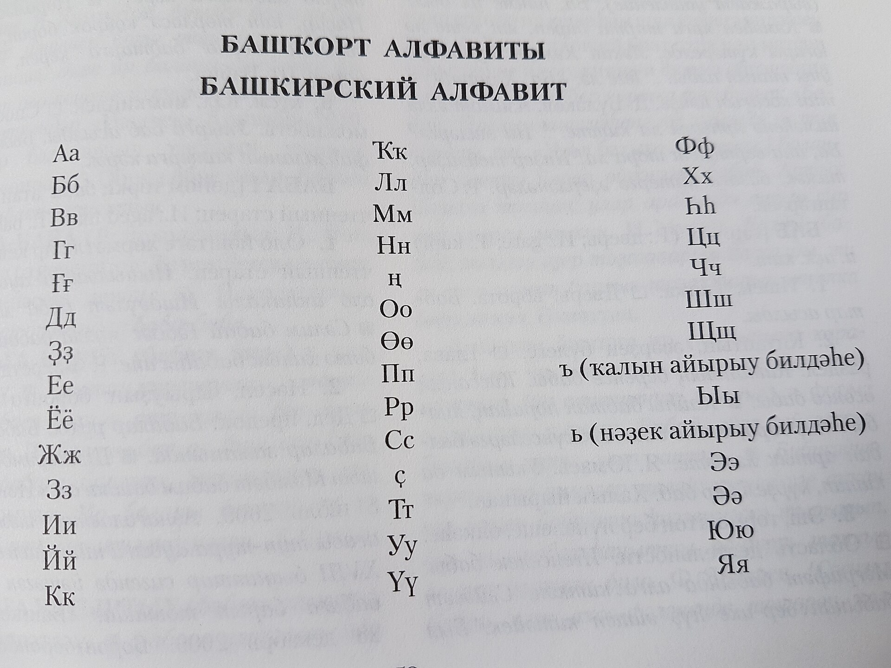
Башкирский разговорник
Курай — голос степи
Курай (ҡурай) — длинная продольная флейта (около метра) из стебля зонтичного растения курая, растущего на склонах Южного Урала. Инструмент — древнейший символ башкиров: его семилепестковый цветок изображён на гербе и флаге республики.
Игра на курае (ҡурайсы) в 2019 году внесена в список нематериального культурного наследия ЮНЕСКО. Мелодии часто подражают пению птиц и шуму ветра.
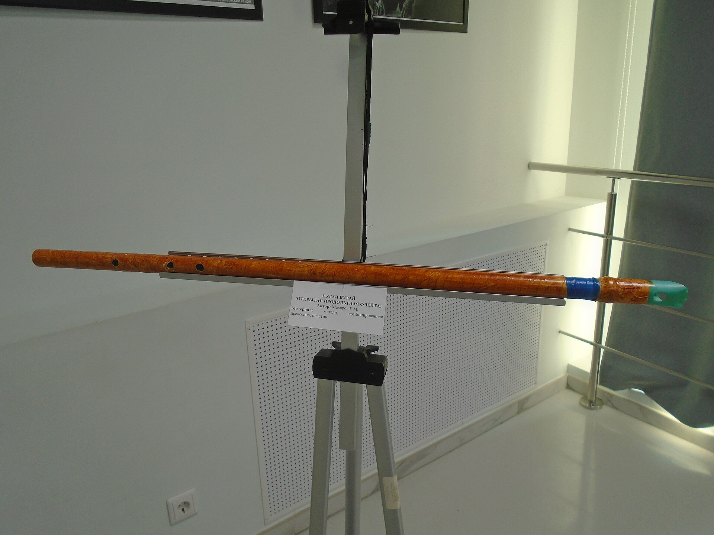
Национальный костюм
Башкирский костюм складывался в условиях кочевого быта. Мужчины носили рубаху, штаны, лёгкий халат йылғаҡ и елан (кафтан), ночью — тепла (меховую одежду). Головной убор — тюбетейка түбәтәй, поверх — меховая шапка.
Женский костюм — платье с оборками, нагрудник сельтер, украшенный кораллами и монетами, и головной убор ҡашмау с подвесками, спускающимися на лицо. Обилие серебра и кораллов — примета достатка и обереги одновременно.
Особая гордость — орнамент: растительные и геометрические мотивы, часто в красно-зелёно-жёлтой гамме.
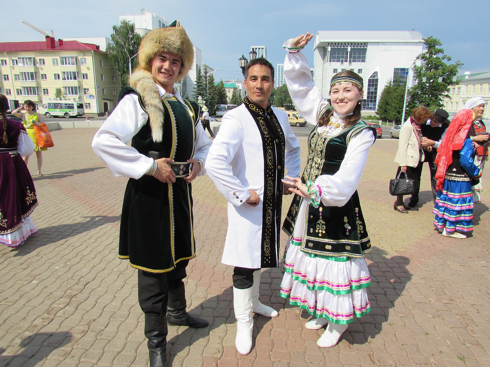
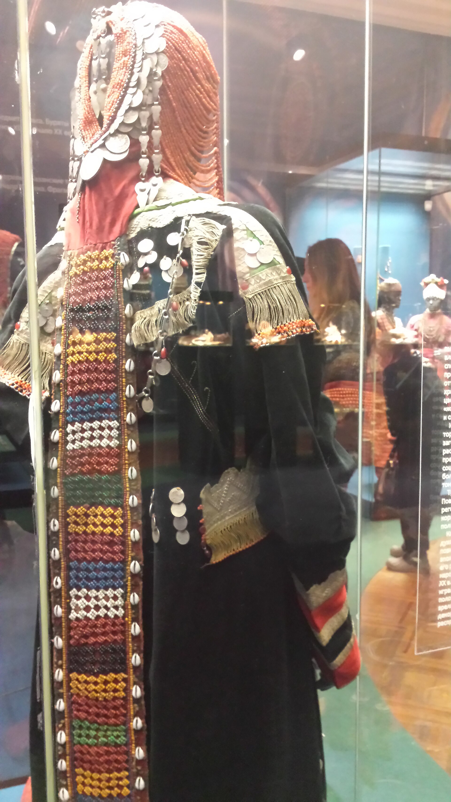
Тирмэ — войлочная юрта
Тирмэ — разборное жилище башкир-кочевников: деревянный каркас из решёток и жердей, покрытых войлоком. Собирается за час, тёплая зимой и прохладная летом.
Внутри было чёткое деление: правая (мужская) половина — конская сбруя, оружие; левая (женская) — посуда, утварь. В центре — очаг, напротив входа — почётное место для гостей. Дверь всегда смотрела на восток.
Кочевание (йәйләү — летнее пастбище) ушло в прошлое к началу XX века, но юрта до сих пор ставится на праздниках как символ гостеприимства.
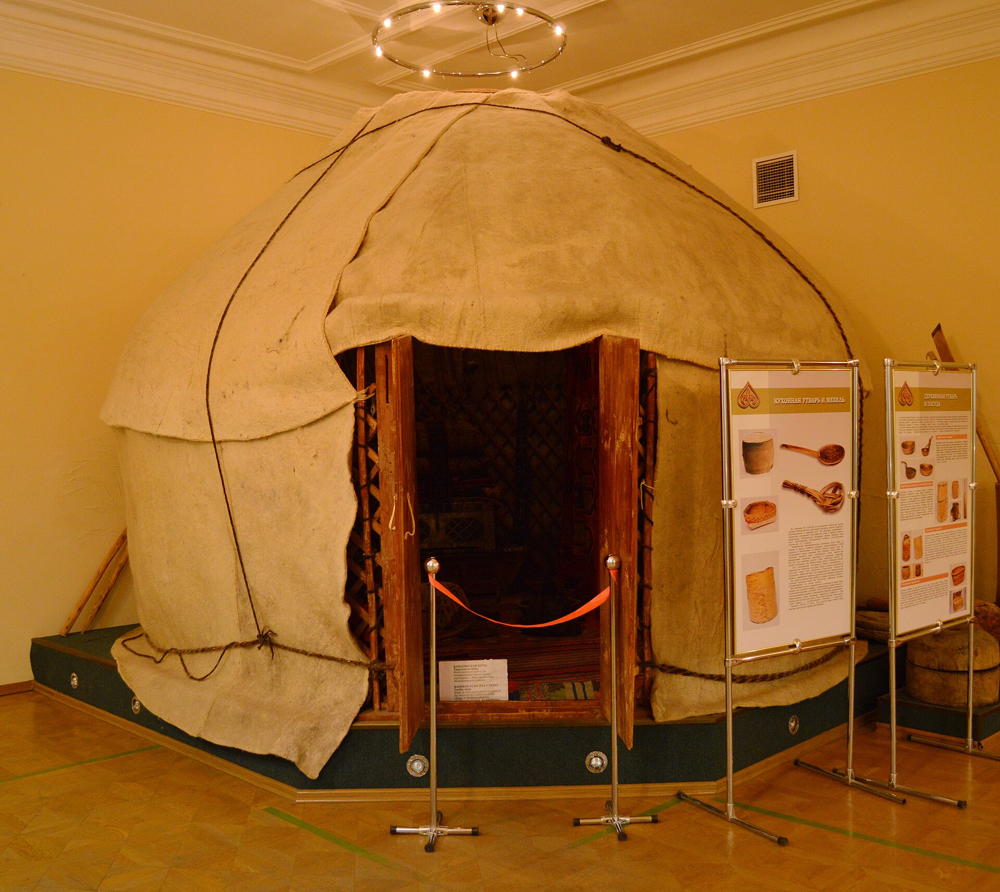
Сабантуй — праздник плуга
Сабантуй (һабантуй) — древний весенний праздник окончания посевных работ, главная народная гуляния Башкортостана. В 2023 году он получил статус федерального праздника России.
Программа неисчерпаема:
- 🤼 Көрәш — борьба на кушаках, победитель получает барана
- 🪵 Бег с ложкой во рту — с монеткой-спиралью на конце
- 🥔 Бег в мешках и добывание приза по гладкому столбу
- 🏹 Стрельба из лука, скачки, перетягивание палки
- 🍲 Общее угощение: һалма, баурсак, кымыҙ
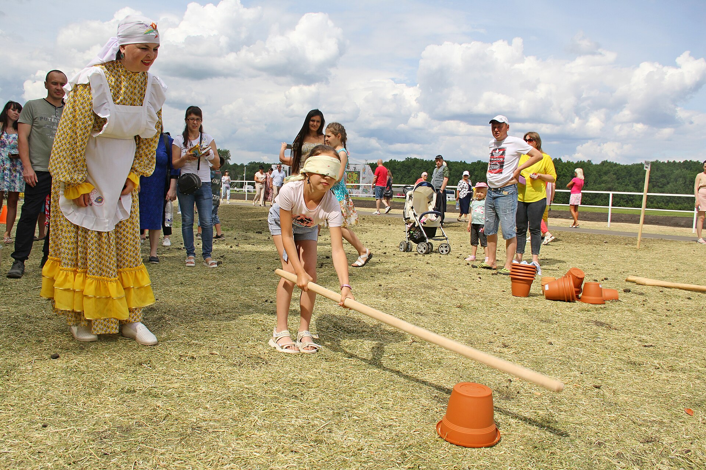
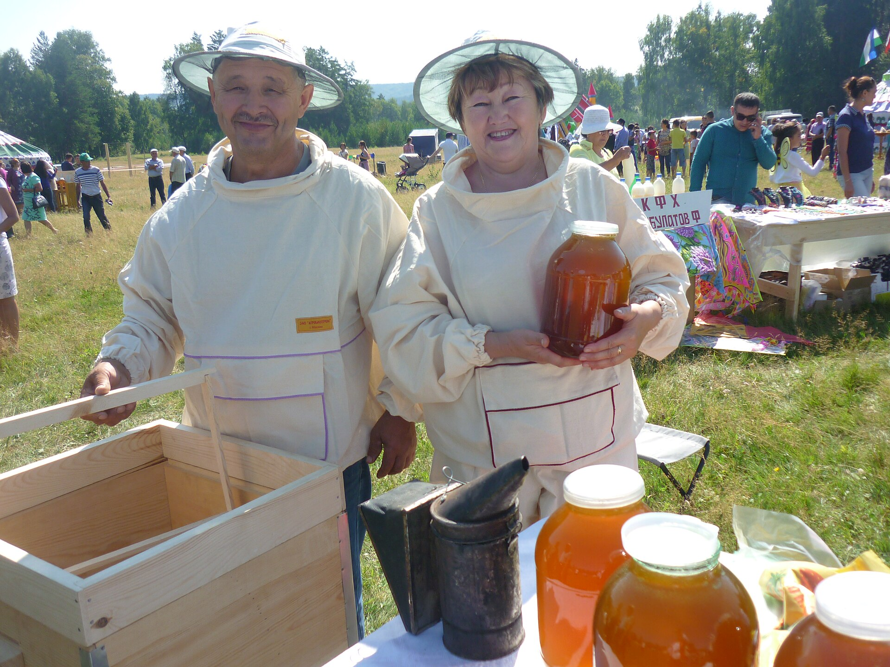
Башкирская кухня
Фильтруйте блюда по категориям и нажмите на карточку, чтобы узнать рецепт
Люди, прославившие Башкортостан
Нажмите на карточку, чтобы развернуть биографию
Галерея
Нажмите на фото, чтобы открыть в полном размере (стрелки ← → листают)
Квиз: как хорошо вы знаете Башкортостан?
10 вопросов — от простых до совсем каверзных
Проверьте себя! За каждый правильный ответ — балл. Рекорд сохраняется в вашем браузере.